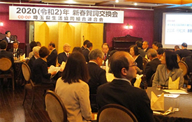
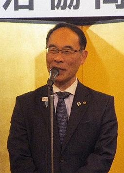
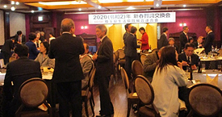

埼玉県生協連2020(令和2)年新春賀詞交換会報告
埼玉県生協連新春賀詞交換会を開催しました
1月16日（木）18時より、ロイヤルパインズホテル浦和3階｢ゴールドルーム｣にて、埼玉県生協連への日頃のご厚情に感謝を伝えるとともに、出席者との懇談やネットワークづくりの場、会員生協への理解を広げ、生協の認知度をアップする場と位置づけて、新春賀詞交換会を開催しました。
大野元裕埼玉県知事をはじめ、各界を代表する64人の皆様に出席いただき、懇親を深めました。
- 出席者
- 県行政・県議会6人、友誼団体18人、報道各社2人、消費者団体9人
日本生協連2人、埼玉県生協連役員・会員生協役職員27人 合計64人
主催者あいさつと報告

開会にあたり、主催者を代表して吉川会長理事から、出席者の皆さんに感謝を伝えるとともに、台風19号災害に対して、全国の生協から寄せられた募金について触れ｢改めて生協の助け合いの精神、組合員のお互いさまの気持ちを実感することができた｣と述べました。その後、スライドを使用して埼玉県生協連や県内生協の紹介、行政や諸団体と連携した取り組み事例を報告しました。
埼玉県知事、埼玉県議会議長よりごあいさついただきました

埼玉県行政を代表して大野元裕知事、埼玉県議会を代表して神尾髙善議長よりごあいさついただきました。大野元裕知事はあいさつの中で｢生協連の皆さんには埼玉県民の安全と安心、食の安全や環境問題に対する取り組みをされていることに感謝します。SDGsは生協が取り組んでいた中身そのものです。誰ひとり取り残さない、ともに共生する社会づくりに力を貸していただき、日本一住みやすい埼玉県を目指していきたいと思います｣と話されました。
埼玉県議会各会派代表、各界代表よりごあいさついただきました
埼玉県議会各会派、各界を代表する7人の皆様からもごあいさついただきました。ごあいさついただいた方は次のとおりです。

無所属県民会議 醍醐清県議
埼玉県議会公明党議員団 西山淳次県議
日本共産党埼玉県議会議員団 秋山もえ県議
JA埼玉県中央会 永島朗専務理事
NPO法人埼玉消費者被害をなくす会 池本誠司理事長
埼玉県原爆被害者協議会 田中熙巳会長
閉会あいさつ
横山博志常務理事より、閉会あいさつを行い、盛会のうちに終了しました。